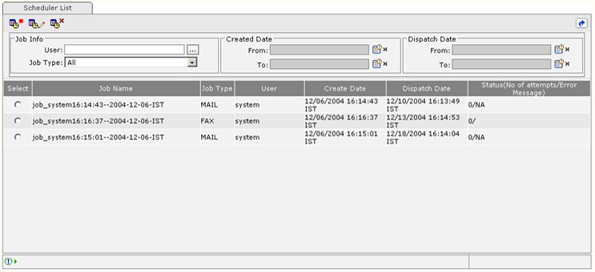

How to Delete a Job?
Select a Job from the Job list, Click on Delete Job Icon [ ] , the Job will be deleted, Job list will get refreshed and will appear with the message in the status Bar as Job successfully deleted.
